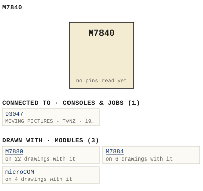

M7840
| Type | module |
| Category | COMMUNICATION |
| Try it | simulator & front panel · download package (zip) |
| Earliest dated evidence | 1993|26 — used in a dated job |
| Evidence | job 93047 |
| Confidence | low (in use by) |
| All years found | 1993|26, 1995|28 |
| Used in jobs | 93047 (1993|26) |
| Folder | Consoles/1980-1989/893047 |
| Folder | Consoles/1990-1999/93047 - MOVING PICTURES - TVNZ |
| Folder | Consoles/1990-1999/940145 |
Connections
What it is made of and what it is part of.
Pictures


M7840.connections.svg 1989 - 893047 - DOC - 093047-04-001 - NOTE NOTE NORMALLED JACK PAIR NOTE CAMERA PRUGRAN.jpg
1989 - 893047 - DOC - 093047-04-001 - NOTE NOTE NORMALLED JACK PAIR NOTE CAMERA PRUGRAN.jpg 1994 - 940145 - DOC - 940145-01-001 - PROGRAM SOUND PROGRAM SOUND PROGRAM SOUND.jpg
1994 - 940145 - DOC - 940145-01-001 - PROGRAM SOUND PROGRAM SOUND PROGRAM SOUND.jpg 1996 - 960163 - DOC - 960163-04-002 - KEYPAD LAYOUI IISSUE REVSION.jpg
1996 - 960163 - DOC - 960163-04-002 - KEYPAD LAYOUI IISSUE REVSION.jpg 19xx - DOC - SECTIONS CROSSPOINT CROSSPOINT NORVALLY OFF SWITCHED.jpg
19xx - DOC - SECTIONS CROSSPOINT CROSSPOINT NORVALLY OFF SWITCHED.jpg 19xx - M7840 - 11819_wbs_m7840_01.jpg
19xx - M7840 - 11819_wbs_m7840_01.jpg 19xx - M7840 - 11819_wbs_m7840_02.jpg
19xx - M7840 - 11819_wbs_m7840_02.jpg 19xx - M7840 - 11819_wbs_m7840_03.jpg
19xx - M7840 - 11819_wbs_m7840_03.jpg 1993 - 93047-01-001 - MOVING PICTURES TVNZ OUTSIDE BROADCAST FUNCTIONAL - DRN DRG - ISS 1.jpg
1993 - 93047-01-001 - MOVING PICTURES TVNZ OUTSIDE BROADCAST FUNCTIONAL - DRN DRG - ISS 1.jpgPinout & connections
Physical manual inventory
| Item | Location | Status | Scanned |
|---|---|---|---|
| M7840 Telephone communications Terminal | LOOSE BOX |
Photos & scans (21)


Consoles & jobs it is connected to (1)
Their own drawings name this module.
| Job | Year | Drawing | Page |
|---|---|---|---|
| 93047 | 1993|26 | 1993 - 93047-01-001 - MOVING PICTURES TVNZ OUTSIDE BROADCAST FUNCTIONAL - DRN DRG - ISS 1.jpg | 1 |
Named in other drawings & documents (3)
| File | Page |
|---|---|
| 1995 - M405P - ITEMIMP(1).TXT (2).docx | 1 |
| 1995 - M405P - ITEMIMP(1).TXT.docx | 1 |
| 1995 - M405P - ITEMIMP.TXT.docx | 1 |
Drawings (4)
Each scan with its trace laid over it: the slider runs from the scan to the vector drawing. Click one to see it large and save it as SVG, DXF, KiCad, PDF or PowerPoint.
Program Sound Program Sound Program Soundviewer
Note Note Normalled Jack Pair Note Camera Prugranviewer
Keypad Layoui Iissue Revsionviewer
Sections Crosspoint Crosspoint Norvally Off Switchedviewer
Read from the drawing title blocks.
| Drawing | Title | Date | Drawn by | Checked by | Iss. | Source |
|---|---|---|---|---|---|---|
| — | Sections Crosspoint Crosspoint Norvally Off Switched | DRG | file | |||
| 093047-04-001 | Note Note Normalled Jack Pair Note Camera Prugran | DRG | file | |||
| 940145-01-001 | Program Sound Program Sound Program Sound | WS | file | |||
| 960163-04-002 | Keypad Layoui Iissue Revsion | DBS | file |